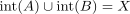
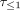
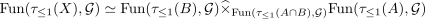
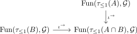
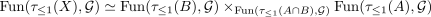
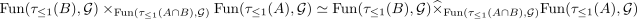
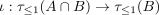
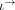

functor category of the fundamental groupoid and 2 categorical pullback
1. Proposition
Let  be a topological space,
be a topological space,  a cover with
a cover with

and
the fundamental groupoid. Let be an arbitrary groupoid, then there exists a natural equivalence
be an arbitrary groupoid, then there exists a natural equivalence

for the 2-categorical pullback of a functor diagram

2. Proof
Note that by
and Seifert van Kampen about groupoids there exists an isomorphism

Then by isofibration induces equivalence of 2-pullback and pullback in Cat there exists an equivalence

as

is object-injective functor and therefore by precomposition with object-injective functor on groups as isofibration on the functor category
is an isofibration